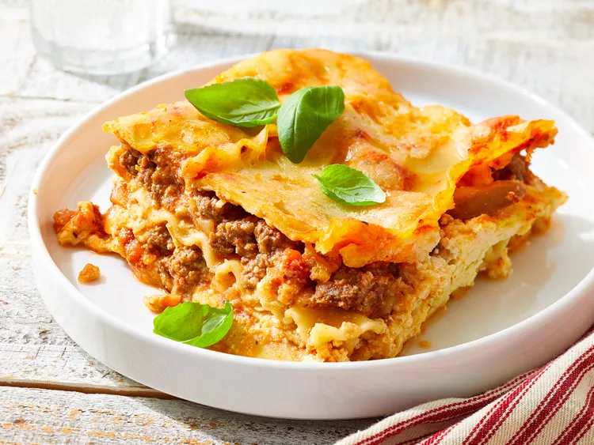

Classic Lasagna

Description
This is a rich and creamy traditional Italian lasagna made with layers of savory meat sauce, tender pasta sheets, and a blend of ricotta, mozzarella, and parmesan cheeses baked to golden perfection.
Ingredients
- 12 lasagna noodles
- 1 lb sweet Italian sausage
- 3/4 lb lean ground beef
- 1/2 cup minced onion
- 2 cloves garlic, crushed
- 1 can (28 ounces) crushed tomatoes
- 2 cans (6 ounces each) tomato paste
- 2 tablespoons white sugar
- 16 ounces ricotta cheese
- 1 egg
- 3/4 lb mozzarella cheese, sliced
- 3/4 cup grated Parmesan cheese
Steps
- Preheat oven to 375°F (190°C), boil lasagna noodles in a large pot of salted water until al dente, then drain and rinse with cold water.
- Brown 1 lb ground beef with a diced onion and minced garlic, then stir in marinara sauce and seasonings and simmer for 10 to 30 minutes.
- Combine ricotta cheese, a beaten egg, grated Parmesan cheese, and herbs in a medium bowl until thoroughly mixed.
- Layer meat sauce, noodles, ricotta mixture, and mozzarella in a greased 9x13-inch dish, repeat twice, and top with remaining sauce and cheese.
Back to Odin Recipes